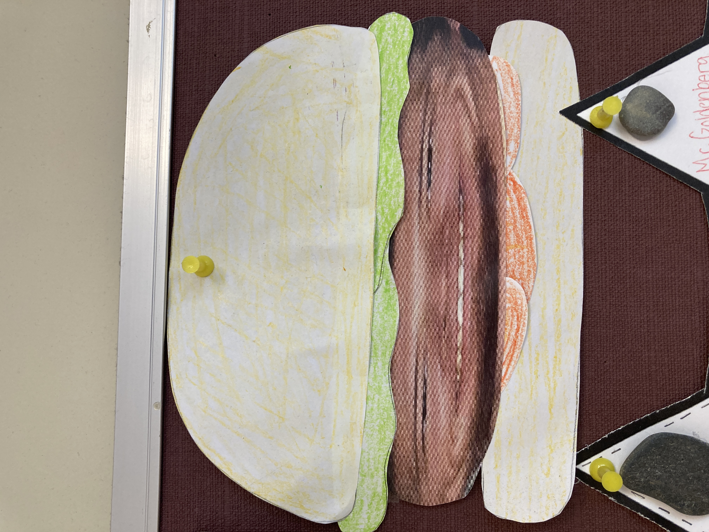
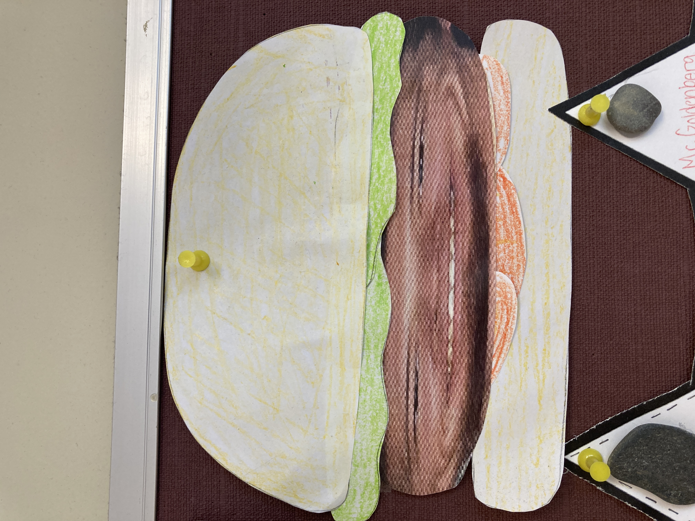

About Zach, Founder & Content Creator
 

Zachariah Goldenberg has been a math nerd since the early 90s, he loves to solve problems and help people learn stuff.
Credentials wise, he graduated from Plymouth State University where he double majored in Mathematics and Political Science. He then worked as a licensed financial representative at Fidelity Investments, an actuary at Liberty Mutual, and as a solar sales energy consultant at Tesla. He's currently a high school math teacher where he created a personal finance class that he teaches. And he picked up his masters in data analytics to boot!